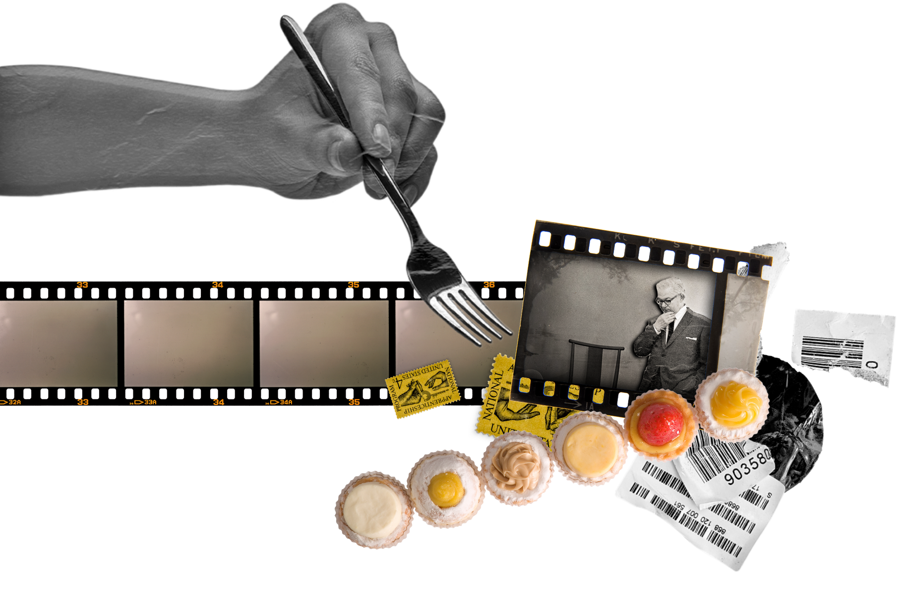
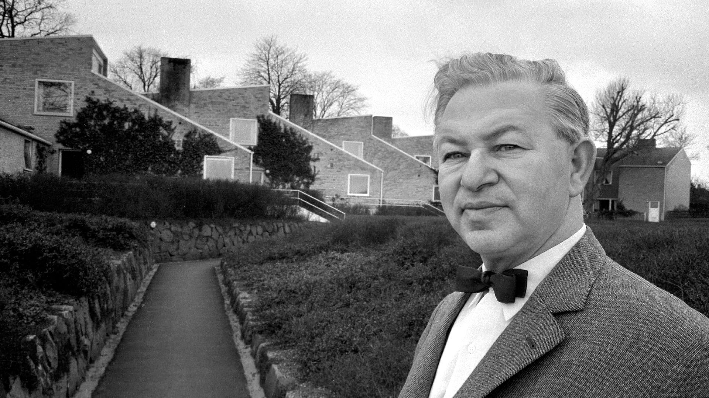

코펜하겐에서 유년 시절을 보낸 아르네 야콥센에게는 유명한 일화가 있다. 어린 시절 빅토리아 양식으로 장식되었던 침실 벽지를 새로 페인트칠했다고 한다. 그는 평범한 어린이용 드로잉이나 남자아이들이 좋아하는 블루 컬러로 장식된 벽지가 아닌, 침실 벽 전체를 화이트로 칠했다.
오늘날에는 평범해 보일 수 있지만, 20세기 초였던 당시에 화이트 컬러의 벽은 매우 신선한 선택이었다. 이처럼 아르네 야콥센은 매우 어릴 때부터 시대를 앞서갔음을 짐작할 수 있다.
20세기 중반 그 이후까지, 아르네 야콥센의 혁신적인 아이디어는 덴마크 디자인의 지평을 넓혔다. 스칸디나비아반도에 큰 반향을 불러일으킨 그의 디자인은 전 세계 건축가와 디자이너들에게 영향을 미친다.
그는 또한 비교적 작은 규모이지만 뛰어난 창의력을 발휘하는 스튜디오와 함께 일하며 덴마크 국립은행과 같은 정교한 건축물 외에도 자신의 이름을 내건 식기 세트를 위한 특별한 티스푼까지, 다양한 프로젝트를 주도하였다.
아르네 야콥센의 창의적인 디자인 과정 그 중심에는 디테일을 향한 집요함이 자리 잡고 있다. 그는 후원자와 건축가들에게 직접 꼼꼼하게 페인팅한 수채화를 선보이며 그가 품은 비전을 제시하였다. 다른 디자이너들에게는 5년이라는 시간도 부족할 만한 프로젝트를 1년 만에 완성한 아르네 야콥센은 가히 천재적인 예술가라 할 수 있다.
fritz hansen web site
editor: fritz hansen
photo: kinfolk


까다롭고 꼼꼼한 성격의 소유자
그와 함께 일하는 파트너와 제조업자들에게 그는 상냥하기보단 까다롭고 비타협적인 사람이었으며, 직원들에게도 일찍 퇴근하여 가족들과 시간을 보내거나 휴가를 떠나며 여유를 누리는 대신 더 열심히 일할 것을 요구했다. 그의 까다로움을 보여주는 일례로, 자신의 집을 꾸미는 과정에서 그는 가족에게 여러 종류의 화이트 컬러 페인트를 보여주고 그 중에서 가장 적당한 색을 고르도록 했고, 액자를 걸 자리를 정하기 위해 몇 시간 동안 그림을 들고 있도록 시켰다. 야콥센이 퇴근 후 집에 돌아올 때가 되면 가족들은 커피잔을 줄 맞춰 가지런히 정리하고, 아이들의 장난감은 그의 눈에 보이지 않는 곳으로 치워야 했다.
fritz hansen web site
editor: fritz hansen
photo: TV2 Lorry
디자인 가치관과 명언
그는 역설하기를, 빌딩과 제품은 적절하게 비율되어야 한다. 즉 재료들과 색상들이 그들의 전반적인 인상을 얻기 위해 서로 관련되어야 하는 점이다. 야콥센은 시간을 초월한 우아하고 기능적인 디자인을 생산하고자 전통적인 스칸디나비아 디자인의 속성들인 재료와 구조통합을 가진 조각적이며 유기적인 형태를 결합했다. “파스테리(pastry)는 아름답게 보일 때 최대로 맛이 있다. 만일 그것이 보기가 좋으면 어떤 것도 상관하지 않는다.”
37 scanadinavia designer
editor: 이희숙
photo: 360modern Blog / DomesticoShop